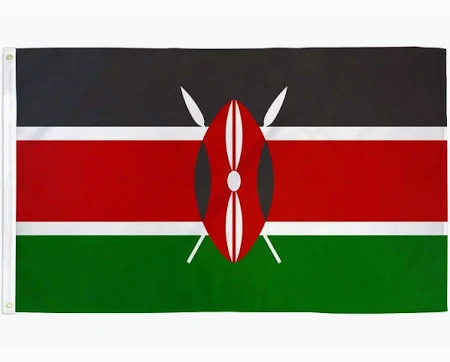

Daniel Thomas Okila
About Me
Hello! My name is Daniel Thomas Okila. I am from Kenya and I am currently studying through BYU-Pathway Worldwide.
I have a strong interest in technology, software development, and creating solutions that make a positive difference in people's lives. I enjoy learning new skills and exploring how technology can solve real-world problems.
My goal is to become a skilled software developer and use my knowledge to build meaningful digital experiences.
Kenya

Kenya is a beautiful country located in East Africa. It is known for its diverse cultures, wildlife, beautiful landscapes, and welcoming people.
From the Great Rift Valley to the Indian Ocean, Kenya offers a rich variety of natural beauty. Nairobi is its capital city and an important center for business, education, and technology.